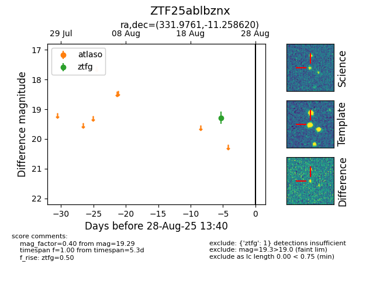

Target ZTF25ablbznx at 2025-08-26 12:20, see:
FINK: fink-portal.org/ZTF25ablbznx
Lasair: lasair-ztf.lsst.ac.uk/objects/ZTF25ablbznx
ALeRCE: alerce.online/object/ZTF25ablbznx
alt names
ZTF25ablbznx (ztf,fink)
coordinates:
equatorial (ra, dec) = (331.9761,-11.25862)
galactic (l, b) = (47.2927,-48.49918)
photometry
last ztfg=19.29
1 ztfg detections
